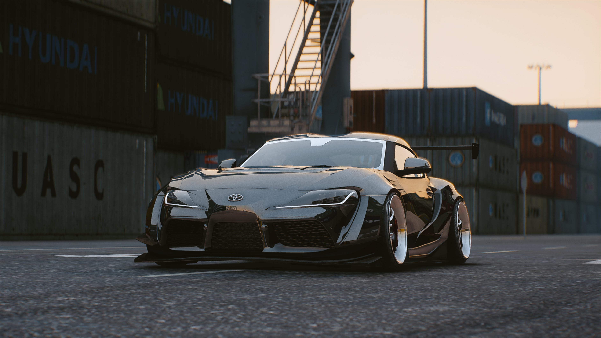

.jpg)

El Toyota Supra MK4, una obra maestra sobre ruedas que despierta la pasión automotriz con su elegancia y poder. Este icono del rendimiento japonés es mucho más que metal y velocidad; es un sueño hecho realidad para los amantes de la conducción.
El Toyota Supra MK4 es mi favorito por su diseño aerodinámico que combina agresividad y elegancia a la perfección. Su motor 2JZ-GTE es una maravilla de ingeniería, ofreciendo una potencia sólida y una durabilidad excepcional. La plataforma robusta del Supra MK4 permite modificaciones significativas, brindándome la oportunidad de personalizarlo según mis preferencias de rendimiento.
AMotor: 3.0 litros, 2JZ-GE (N/A). Potencia: Alrededor de 220 hp. Transmisión: Manual de 6 velocidades o automática de 4 velocidades.
Motor: 3.0 litros, 2JZ-GTE (Twin-Turbo). Potencia: Inicialmente 276 hp (limitada electrónicamente), pero con un gran potencial para modificaciones. Transmisión: Manual de 6 velocidades o automática de 4 velocidades.

El Supra MK4 Twin-Turbo era conocido por su impresionante aceleración. 0 a 60 mph en alrededor de 4.6 segundos.
Suspensión ajustada para un manejo deportivo y estabilidad. Frenos potentes para un rendimiento de frenado sólido.
.jpg)
Actualizaciones de suspensiones para mejorar la manipulación y el rendimiento en curvas.
Kits de carrocería personalizados para cambiar el aspecto exterior. Mejoras en el interior, como volantes deportivos y asientos de competición.
